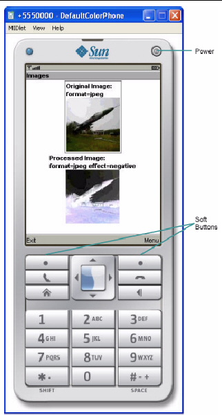
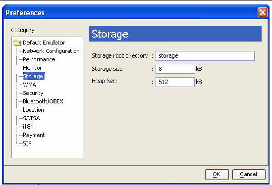
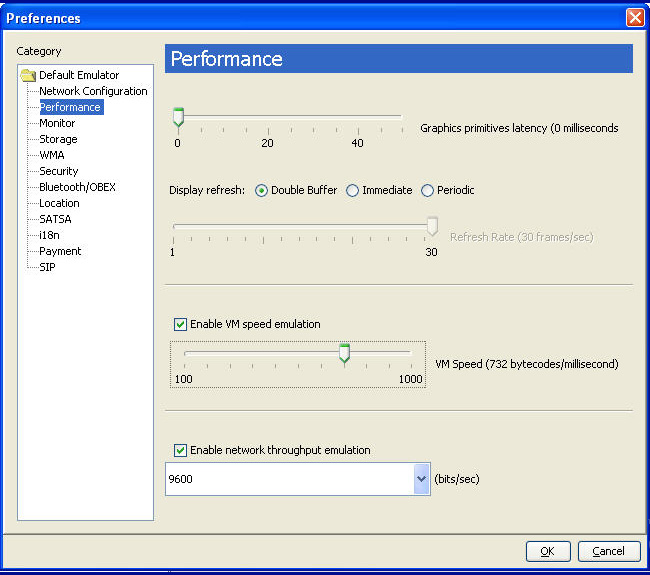

| Sun Java Wireless Toolkit for CLDC User's Guide |
| Sun Java Wireless Toolkit for CLDC User's Guide |
| C H A P T E R 4 |
|
Using the Emulator |
The Sun JavaTM Wireless Toolkit for CLDC emulator simulates a MIDP device on your desktop computer. It is a convenient way to see how your application performs in a MIDP environment and gives you a tight development cycle that is entirely contained on your desktop computer.
The emulator does not represent a specific device, but it provides correct implementations of its supported APIs.
A skin is a thin layer on top of the emulator implementation that provides it with a certain appearance, screen characteristics, and input controls. The Sun JavaTM Wireless Toolkit for CLDC comes with skins that represent different kinds of devices.
You can create your own emulator skins if you wish. See the Basic Customization Guide for details.
The emulator looks and acts like a mobile phone inside a standard desktop window. This section describes how to control the emulator. The description and figures are based on the DefaultColorPhone skin, but all the skins operate in a similar way.
FIGURE 4-1 The DefaultColorPhone Emulator skin

You can use the mouse to click the buttons to press them. Most buttons also have keyboard shortcuts, which are generally easier to use. Keyboard numbers 0 through 9 correspond to the emulator's 0 through 9 buttons. Some less obvious keyboard shortcuts are in the following table.
Entering text works much as it does on many real devices. Press a number key multiple times to get the letter you want. For example, press the 5 key twice for the letter K. When you are entering text, the asterisk key (*) switches between upper case, lower case, numbers, and symbols. The indicator at the top of the screen shows your current mode. The pound key (#) enters a space.
Alternatively, you can just type on your keyboard to enter text. Although this is convenient for entering text, you must remember that it is a convenience your users will most likely be lacking.
Another convenience is the capability to copy and paste information in text areas. You can paste text from the clipboard into a TextBox or TextField by pressing Control-v. To copy the contents of a TextBox or TextField, press Control-c. The entire contents of the text field will be placed on the clipboard.
You can adjust the emulator settings to more closely resemble a specific device or to test your application under different resource conditions.
The emulator uses your desktop network connection. For example, if the emulator runs a MIDlet that makes an HTTP connection, the emulator attempts to make the HTTP connection using the desktop's network setup.
If your development computer is behind a firewall, you might use a proxy server to make HTTP connections. If you're not sure, try examining your browser's settings to see if it uses proxy servers.
If you are using proxy servers, you need to configure the emulator to use the same proxy servers. To do this, choose Edit > Preferences. On the Network Configuration pane, fill in the names and port numbers for the proxy server you wish to use. You can also select which version of HTTP you wish to use.
If your proxy servers use HTTP Basic authentication (see RFC 2617), check Authentication and fill in the user name and password.
You can set or modify the amount of persistent storage assigned to each emulator, or you can change the heap size (the amount of storage allowed for your application's objects). Choose Edit > Preferences and select the Storage item.
FIGURE 4-2 Storage Preferences

The emulator has persistent storage, which by default is placed below the appdb subdirectory in a phone skin directory. These files have a .db extension.
For example, on Windows the persistent storage for the DefaultColorPhone emulator skin is stored in workdir\appdb\DefaultColorPhone\manager_storage_settings.db.
If multiple instances of the same emulator skin run simultaneously, the toolkit generates unique file paths for each one. For example, on Windows instances of DefaultColorPhone might have a file path name of workdir\appdb\temp.DefaultColorPhone1, workdir\appdb\temp.DefaultColorPhone2, and so forth.
| Note - The file workdir\appdb\DefaultColorPhone\in.use keeps track of the number of storage roots marked as in use. If the emulator crashes, you need to delete the in.use file. |
The toolkit enables you to choose a different location for the storage files, and you can limit the size of the storage. This is useful if you wish to test your application's behavior when a small amount of persistent storage is available.
To adjust the persistent storage settings, choose Edit > Preferences and click Storage in the left pane. In the Storage root directory field, enter the name of the directory you want to use for persistent storage. You can only enter a relative path, and the directory you specify is created in the appdb subdirectory.
By default you are allowed one megabyte (1024 Kbytes) of persistent storage. You can enter a limit in kilobytes. Bear in mind that the storage implementation has some overhead in addition to the space your application uses. For example, if you enter 8 kilobytes for the persistent storage size, 8192 bytes is available for both your application data and the storage overhead.
To erase the emulator's persistent storage, choose File > Utilities. Click the Clean Database button to wipe the persistent storage clean. Clean Database does not affect installed applications.
The heap is memory where your application's objects are stored. To change the heap size, choose Edit > Preferences and select the Storage item (see FIGURE 4-2). By default the heap size is one megabyte. You can set the maximum heap size to more closely simulate the conditions on a real device. Fill in the maximum heap size in kilobytes in the Heap Size field.
The emulator uses many of the resources of your desktop computer, including its display and network connection. Compared to the desktop-based emulator, a real MIDP device usually has a slower processor, less memory, and a slower network connection, and might have a different type of display.
The Sun JavaTM Wireless Toolkit for CLDC enables you to simulate the constrained environment of a real device. Although the emulator does not represent a real device, adjusting the performance settings gives you useful information about how your application performs under varying runtime conditions.
Choose Edit > Preferences and click Performance in the left pane. See FIGURE 4-3.
FIGURE 4-3 Adjusting the Emulator's Performance

Adjust the Graphics primitives latency to have an effect on the amount of time that elapses between your application's calls to drawing methods in the Graphics class and when the drawing actually takes place.
To change the screen characteristics, choose one of the Display refresh types. If you choose a Periodic type, you also need to specify the Refresh Rate.
To simulate the slower speed of a real device, check Enable VM speed emulation and choose the speed you want.
To adjust the simulated network speed, check Enable network throughput emulation, and choose a speed in bits/sec.
MIDlets have a life cycle that is defined by the MIDP specification. MIDlets can be started and stopped by the device. Furthermore, external events like incoming phone calls can cause the device to pause a MIDlet.
The emulator provides a simple mechanism to pause and resume running MIDlets. This is very helpful for testing your application's behavior when it is paused.
When the emulator is running, choose MIDlet > Pause from the emulator window's menu. The running MIDlet is paused and the screen displays an "Incoming Call..." message.
To resume operation, choose MIDlet > Resume from the menu.
During development, you usually run the emulator directly from the toolkit by pressing the Run button or selecting Project > Run via OTA. For testing or demonstrations, you might want to run the emulator by itself. Several different approaches are described in this section. The program group that the Sun JavaTM Wireless Toolkit for CLDC installer creates includes several options for running the emulator by itself.
You can also run the emulator from a command prompt. See Appendix B for more information.
Third-party companies, like device manufacturers and wireless carriers, sometimes create device emulators that are compatible with the toolkit. You can gain experience running your application on a wider variety of implementations by installing additional emulators into the toolkit. The procedure is usually to unpack or install the third party emulator, then copy its directory into workdir\wtklib\devices. The next time you run the toolkit, the emulator is available.
A partial listing of some of the currently available emulators is available here:
http://developers.sun.com/techtopics/mobility/midp/articles/emulators/
| Sun Java Wireless Toolkit for CLDC User's Guide |
Copyright © 2007, Sun Microsystems, Inc. All Rights Reserved.